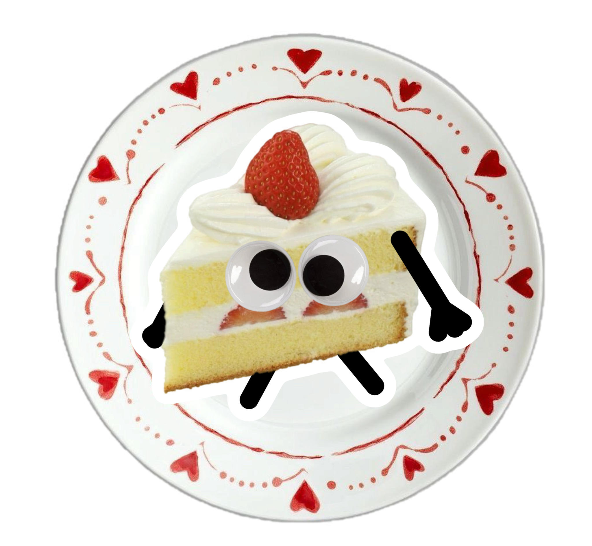
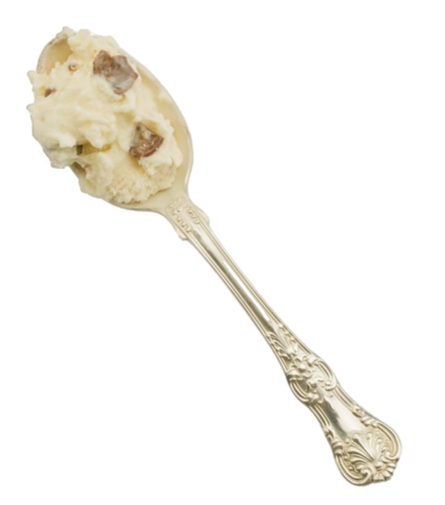
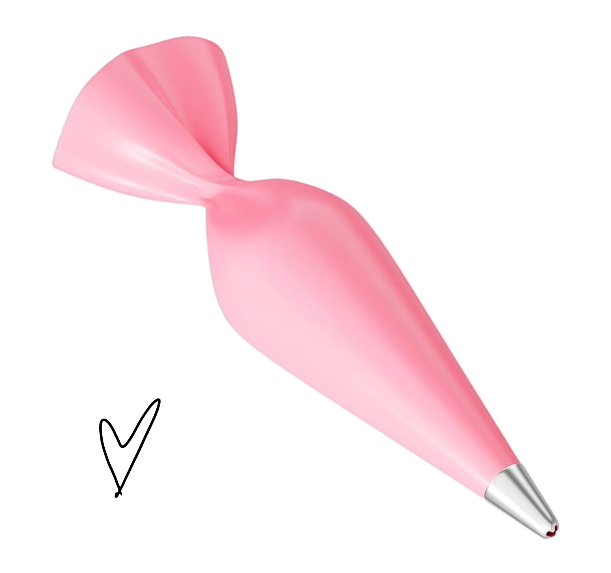
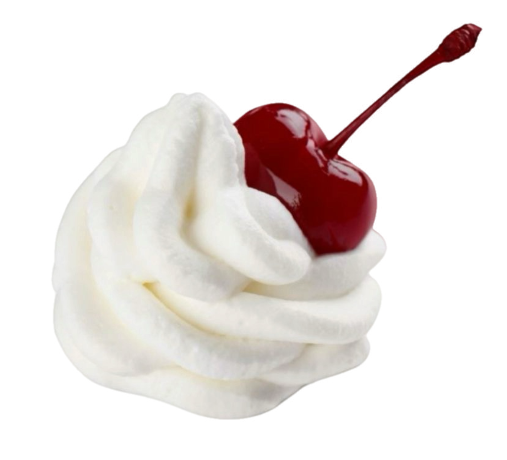

Добро пожаловать в Bonbonie — пространство, где кондитерское искусство встречается с искренними эмоциями. Наша история началась не в стерильном цеху, а на маленькой уютной кухне, где мы впервые испекли бенто-торт для близкого друга. Тогда мы и поняли: десерт — это не просто еда. Это способ сказать «люблю», «спасибо» или «я рядом», когда слова найти сложнее всего.
За эти годы мы прошли огромный путь. Из маленького стартапа мы выросли в кондитерскую, которую рекомендуют друзьям. Каждый торт, который покидает нашу кухню, проходит строгий контроль качества. Мы никогда не используем замороженные или просроченные ингредиенты — если торт не нравится нам самим, мы не отдадим его клиенту. Именно поэтому наши отзывы — это наша гордость.

Почему мы так любим торты и панкейки? Потому что они дарят радость здесь и сейчас. Не нужно ждать огромного праздника — маленький шедевр может скрасить обычный вечер, стать милым сюрпризом для коллеги или знаком признательности для любимого человека. Мы вкладываем душу в оформление каждого заказа. Надпись, рисунок, кремовые цветы — для нас это не рутина, а творческий процесс, где мы каждый раз создаем маленькое произведение искусства.

Помимо классических тортов, мы регулярно экспериментируем и создаем новинки. Мы прислушиваемся к вашим просьбам и всегда готовы адаптировать рецепт под ваши аллергии или пищевые предпочтения. Если вы хотите полностью уникальный дизайн — наш менеджер с радостью обсудит с вами все детали и поможет воплотить самые смелые идеи в жизнь.
В будущем мы хотим продолжать развиваться и открыть для вас больше десертов, еще больше уютных вкусов и еще больше поводов для счастья. Мы очень любим общаться с вами и показывать «внутрянку» нашего кондитерского мира.

Чтобы быть в курсе всех новинок, участвовать в розыгрышах и первыми видеть новые дизайны, подписывайтесь на наши сообщества! Там мы делимся закулисьем, рецептами и просто создаем уютную атмосферу. Будем рады видеть вас в наших соцсетях!
С любовью,
Команда Bonbonie